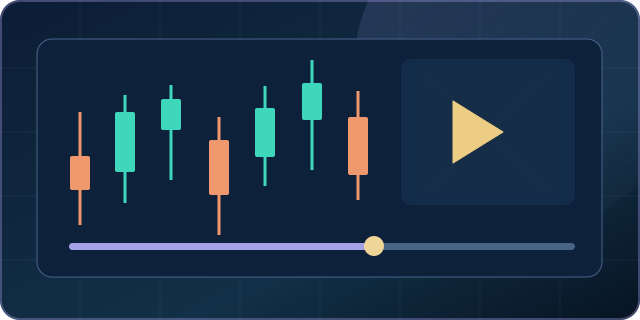

Advanced Market Simulator & Replay
Loading product coverage and current availability…

Practice decisions with observable evidence
The first-party Simulator supports two separate learning paths. Neither is a brokerage execution platform or a guarantee that a recorded hypothetical fill could have occurred in the real market.
Free practice — fictional and member CSV
Eligible signed-in Free members can load the original 2040 fictional teaching candles or a member-supplied OHLCV CSV, advance through the chart, write a plan, and save eligible paper-Journal records within the actual weekly allowance.
Browser-imported CSVs are not independently verified market history. Their full source remains inspectable in browser developer tools, so this mode is not a protected blind assessment.
Paid tools — connected observations and eligible replay
When the existing member entitlement confirms access, the Simulator can request bars from a separately connected, authorized data provider. The account, provider credentials, data availability and licensing are not supplied by this subscription.
Server-controlled historical replay additionally requires a dataset independently approved and published for member display. If none is approved, historical replay is unavailable; the product does not substitute fictional data and call it history.
Worked example — an ambiguous candle
Fictional, illustrative OHLCV example: You plan a long position at $20.00, a protective stop at $19.50 and a target at $20.80. The next five-minute candle has High $21.00 and Low $19.20.
Both the stop and target were touched somewhere inside the candle. The OHLC values alone do not reveal which occurred first. The first-party simulator pauses and asks for an explicit ambiguity decision instead of presenting an invented fill sequence as historical truth. Its modeled outcome is learning evidence, not a broker trade confirmation.
Guided check — should you count this as a verified winning trade?
No. First establish the data's source, bar interval and the actual assumptions used for stop and target ordering. Without a verified intrabar sequence, choose an explicit conservative assumption or leave the outcome unresolved; do not report the favorable result as an observed execution.
CSV import requirements
For reproducible browser practice, import up to 20,000 OHLCV candles in a 4 MiB CSV using a date or timezone-qualified intraday timestamp plus open,high,low,close,volume. The loader checks that prices are positive, high/low enclose the candle body, volume is present and nonnegative, dates are valid, and timestamps are unique. Invalid rows produce an error instead of disappearing silently.
Example timestamp: 2026-01-02T09:30:00-05:00. This is a format example, not verified historical stock data. A member-provided file must have appropriate data-use rights. Existing CSV practice is distinct from licensed, server-controlled historical replay.
Purchase and permissions: The Store above verifies the current plan, price, checkout state and purchase eligibility. The connected-provider service and historical replay enforce account identity, tool entitlement and dataset rights independently. An enabled-looking button does not grant access, and opening these educational examples initiates no payment.
No real orders, guaranteed profits, official Lab mastery, independently licensed third-party tools or data feeds are included. The first-party Simulator is not Schwab thinkorswim OnDemand; that remains a separately operated external platform.